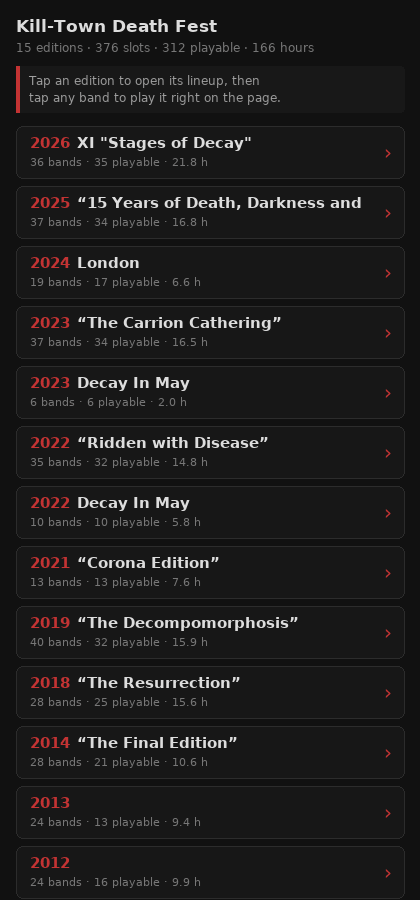

Kill-Town Death Fest
15 editions · 376 slots · 312 playable · 166 hours
Tap an edition to open its lineup, then tap any band to
play it right on the page. Nothing installs, nothing signs in.
Show me how ›

- 2026XI "Stages of Decay"36 bands · 35 playable · 21.8 h›
- 2025“15 Years of Death, Darkness and Decay”37 bands · 34 playable · 16.8 h›
- 2024London19 bands · 17 playable · 6.6 h›
- 2023“The Carrion Cathering”37 bands · 34 playable · 16.5 h›
- 2023Decay In May6 bands · 6 playable · 2.0 h›
- 2022“Ridden with Disease”35 bands · 32 playable · 14.8 h›
- 2022Decay In May10 bands · 10 playable · 5.8 h›
- 2021“Corona Edition”13 bands · 13 playable · 7.6 h›
- 2019“The Decompomorphosis”40 bands · 32 playable · 15.9 h›
- 2018“The Resurrection”28 bands · 25 playable · 15.6 h›
- 2014“The Final Edition”28 bands · 21 playable · 10.6 h›
- 201324 bands · 13 playable · 9.4 h›
- 201224 bands · 16 playable · 9.9 h›
- 201118 bands · 12 playable · 6.9 h›
- 201021 bands · 12 playable · 5.8 h›